Referee Between-games Reset
 High Knee March30 s
High Knee March30 s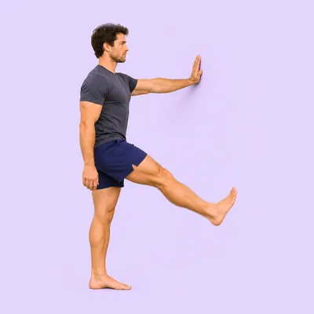
Front Leg Swings20 s each side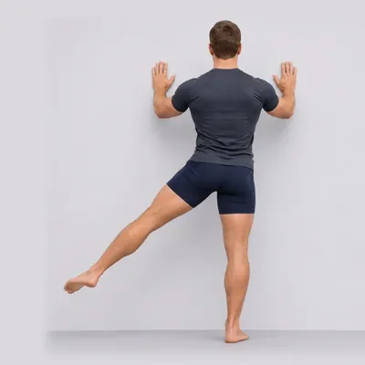
Side Leg Swings20 s each side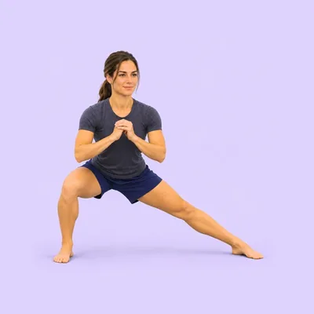
Lateral Lunge Shifts30 s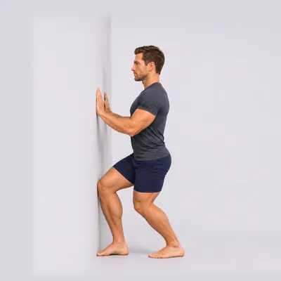
Knee-to-Wall Ankle Rocks15 s each side
For hockey officials
A three-minute standing reset between games on a long night, to keep hips, groin and calves loose.
High Knee March30 s
Front Leg Swings20 s each side
Side Leg Swings20 s each side
Lateral Lunge Shifts30 s
Knee-to-Wall Ankle Rocks15 s each sideMoving warm-up for officials: hips, groin, hamstrings and ankles for a night of skating backwards and stopping hard.
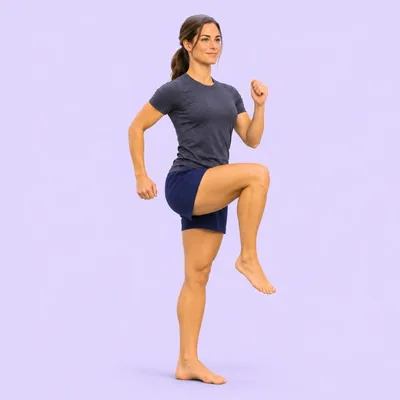
High Knee March40 s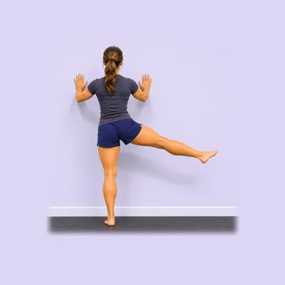
Side Leg Swings40 s each side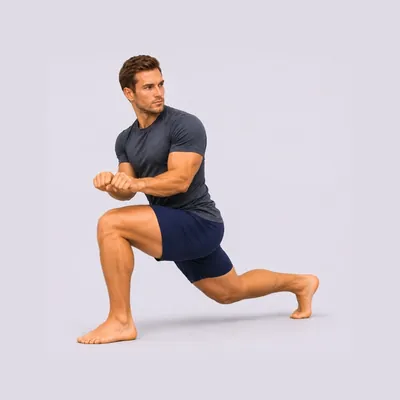
Walking Lunge with Twist45 s Standing Torso Twists30 s
Standing Torso Twists30 s Skating Stance Shifts40 s
Skating Stance Shifts40 sStanding and seated holds after a game, no floor needed: hips, groin, hamstrings, calves and back.
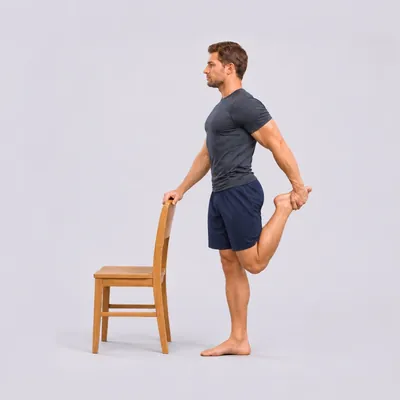
Standing Quad30 s each side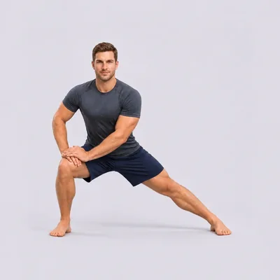
Standing Groin Stretch30 s each side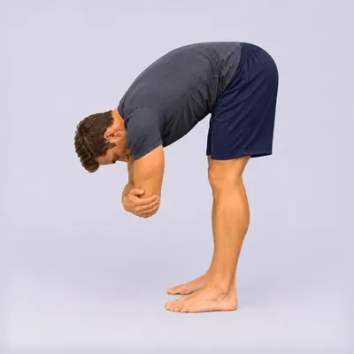
Standing Forward Fold40 s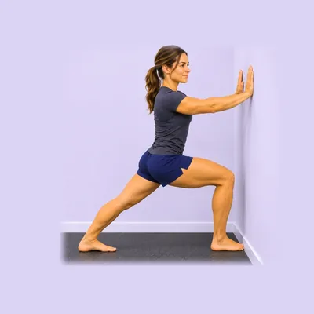
Wall Ankle Stretch30 s each side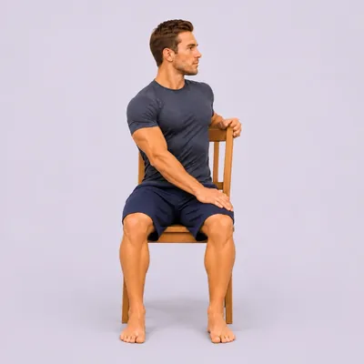
Seated Twist30 s each side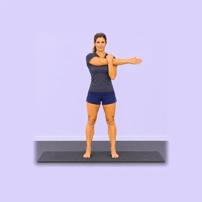
Cross-Body Shoulder30 s each side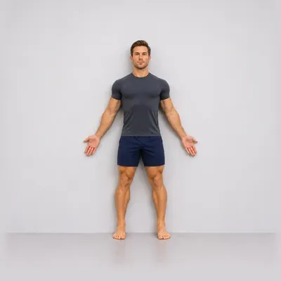
Wall Posture Reset30 sLonger, gentle floor holds at the end of a multi-game night.
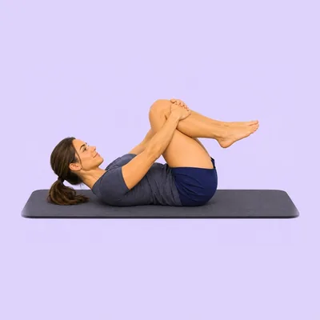
Knees to Chest45 s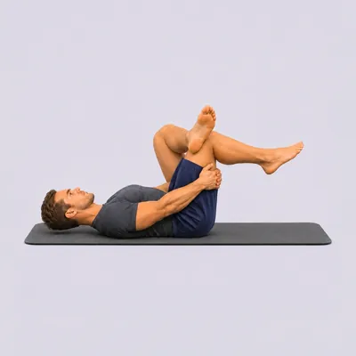
Figure Four45 s each side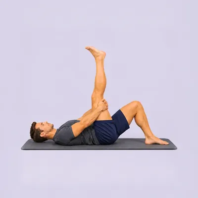
Lying Hamstring45 s each side Butterfly45 s
Butterfly45 s Supine Twist40 s each side
Supine Twist40 s each side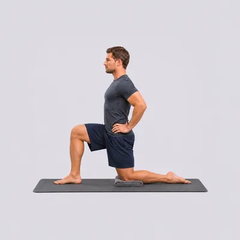
Half-Kneeling Hip Flexor40 s each side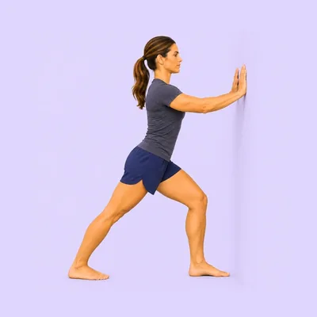
Wall Calf40 s each side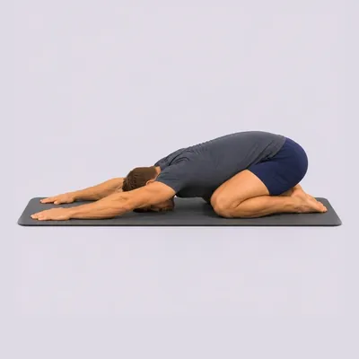
Child’s Pose60 sShort routines for before, between and after games. Every hold time can be changed with − and +.
A timer ring counts down each hold. Once MeFlex has been opened, it works offline too.
A soft chime, and an optional voice that reads the stretch’s name. No need to watch the screen.
Stretch pictures are AI-generated.
Health notice. Stretching should feel like mild discomfort, never pain. Move slowly, do not bounce, and stop if anything hurts. You never have to hold for the full time; shorten a hold, skip a stretch or end the routine whenever you like. MeFlex is a general fitness tool and is not medical advice. If you have a health condition or are unsure what is right for you, check with a qualified health professional first.